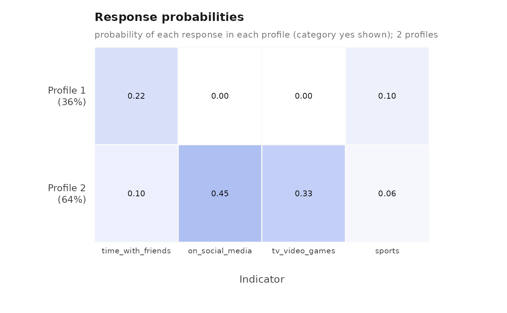

Fit a latent class model that groups observations by their pattern of categorical responses
Source:R/lpa.R
lca.Rdlca() fits a latent class model, which describes heterogeneity in
categorical response patterns through a specified number of latent classes.
Each class is characterized by the probabilities of the response categories
for each indicator, which describe how response patterns differ between
classes.
lca() estimates the class-specific response probabilities and class
proportions, together with posterior membership probabilities for each
observation. Indicators are assumed independent conditional on class
membership unless associations between selected indicators are explicitly
specified. The posterior probabilities describe uncertainty in
classification; an observation's assigned class is a summary of these
probabilities.
The model treats observations as independent. For observations nested within
groups, use multilca(). Ordinal and count indicators can also be fitted
using the structured measurement models described in multilpa().
Arguments
- data
A data frame with one row per observation.
- vars
Names of the discrete indicator columns. Numeric, integer, logical, character and factor columns are accepted, and every distinct value of a column is one category. Columns named in
ordinalorcount(through...) are modelled as such; the rest are categorical.- n_classes
Number of classes; a positive integer.
- ...
Further arguments, passed through
multilca()tomultilpa(), which documents all of them. The ones used most often:missing:"error"(default) stops when an indicator has a missing value;"fiml"keeps every row and uses the responses it has.ordinal,count: indicators invarsmodelled as ordered categories or as counts instead of as unordered categories.local_dependence: pairs of indicators, written"item1:item2", that stay associated within a class.n_starts(default 10) andseed: the number of starts and the seed that makes them reproducible.min_probability: the lower bound on a response probability (default1e-10).profile_covariates: covariates that predict class membership.
idandn_group_classesare not accepted (they belong to the two-level model), and neither isn_profiles: the number of classes isn_classes.
Value
A fitted model of class multilpa, or multilpa_covariates when
profile_covariates is given. The classes are numbered 1, 2, and so on
in the profile column of its tables. get_results() returns the
tables by name, among them:
"responses"(alsoas.data.frame(fit)): one row per class, indicator and category, with the response probability and its standard error;"profile_probabilities": the proportion of each class;"assignments": the data with each row's most likely class and its posterior probabilities;"classification"and"entropy": how clearly the rows are classified;"residuals": bivariate residuals, which show pairs of indicators the classes do not explain;"information_criteria"and"starts".
The fit's call records the original lca() call.
Conditions
Errors: latents_bad_argument when id, n_group_classes or
n_profiles is passed; latents_bad_data when a column is missing from
data or an indicator has missing values under missing = "error";
latents_bad_categorical when categorical names a column not in
vars. Warnings: latents_unidentified when the model has more free
parameters than the table of response patterns has free cells,
latents_unconverged when the reported start did not converge, and
latents_small_classes when a class is nearly empty. multilpa()
raises the others, and latents-conditions lists them all.
See also
lpa() for continuous indicators; multilca() for the
two-level model; enumerate_lca() to compare numbers of classes.
Examples
fit <- lca(student_esm, c("time_with_friends", "on_social_media",
"tv_video_games", "sports"),
n_classes = 2, n_starts = 3, seed = 1)
fit
#> Latent class analysis: 2 classes
#> 2582 observations; 4 categorical indicators
#> Classes are labelled profile_1, profile_2, ... in every table.
#> Log likelihood: -4560.239231 | AIC: 9138.478 | BIC: 9191.185
#> Converged: TRUE | iterations: 69 | best log likelihood reached by 3 of 3 starts (3 converged)
#>
#> Class sizes profile_1 35.6% (919) profile_2 64.4% (1663)
#>
#> Response probabilities
#> indicator category profile_1 profile_2
#> time_with_friends no 0.782 0.897
#> time_with_friends yes 0.218 0.103
#> on_social_media no 1.000 0.552
#> on_social_media yes 0.000 0.448
#> tv_video_games no 1.000 0.670
#> tv_video_games yes 0.000 0.330
#> sports no 0.902 0.943
#> sports yes 0.098 0.057
#>
#> Thresholds and standard errors: get_results(x, "responses").
#> Every other table: get_results(x, what = ), or get_results(x, "all").
get_results(fit, "profile_probabilities")
#> group_class profile probability group_class_probability
#> 1 1 1 0.3557785 1
#> 2 1 2 0.6442215 1
plot(fit, what = "heatmap")
